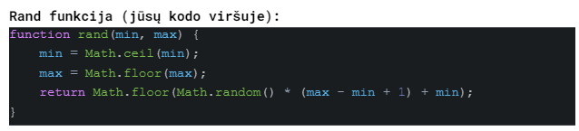

Tarpinis žinių patikrinimas #1
-
Programiškai ridenkite du žaidimo kauliukus- sugeneruokite du atsitiktinius skaičius nuo 1 iki 6 Jeigu kauliukų suma didesnė nei 8 jūs laimėjote, priešingu atveju pralošėte. Išveskite atsakymą, kuriame būtų abiejų kauliukų reikšmės ir išvada laimėjote ar pralošėte.
-
Gyveno du katinukai, Pilkis ir Murklys. Jų svoriai kilogramais buvo atsitiktiniai dydžiai nuo 3 iki 6. Parašyti programą, kuri išvestų katinukų svorius ir apskaičiuotų, kuris katinukas yra lengvesnis. Atsakymas turi būti katinukų vardai su jų svoriais ir lengvesnio katinuko vardas. Jeigu katinukai sveria vienodai, vietoj katinuko vardo parašykite, kad “katinukų svoriai vienodi”.
-
Nojus pasiruošė potvyniui ir nusipirko dvi valtis. Vienoje telpa 15 katinukų, kitoje 15 karvių (katinukus galima sodinti tik į katinukų valtis, o karves tik į karvių, maišyti negalima) Prasidėjus liūčiai pas Nojų atėjo atsitiktinis skaičius nuo 0 iki 30 katinukų ir toks pats atsitiktinis skaičius karvių. Išveskite atėjusių katinukų ir karvių skaičių ir ar Nojus galės juos sutalpinti į valtis. Jeigu netelpa tik katinukai arba tik karvės vistiek išveskite “Netelpa”. Kas konkrečiai netelpa išvedinėti nereikia. “Telpa” išveskite tik tuo atveju jeigu ir katinukai ir karvės telpa.
-
Antanas nusipirko naują butą ir pinigų jam liko nedaug. Dabar jis niekaip negali apsispręsti ką pirmiausiai pirkti: televizorių, skalbimo mašiną ar šaldytuvą. Todėl nusprendžia ridenti kauliuką (atsitiktinis skaičius nuo 1 iki 6) ir jeigu iškris 1 arba 5 pirkti televizorių, jeigu 3 arba 4 pirkti skalbimo mašiną ir jeigu 2 arba 6 - šaldytuvą. Padėkite Antanui apsispręsti. Ridenkite kauliuką ir parašykite atsakymą kokį daiktą jam pirkti.
-
(BOSO lygis) Sugeneruokite tris atsitiktinius skaičius nuo 1 iki 7. Skaičius atspausdinkite nuo mažiausio iki didžiausio. Pavyzdžiui: sugeneravus 4, 2, 4 juos reikia atspausdinti tokia tvarka: 2 4 4;
